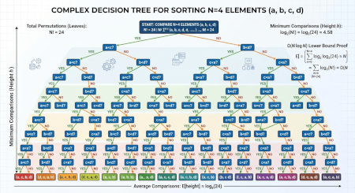

Créé avec gemini version 5
R2-ALGO-03 : Aalgorithmes de tri et de recherche : arbitrages#
Objectifs Pédagogiques#
Ancrage & Formalisation du nombre de comparaisons à partir de l’expérience manipulatoire.
Le dilemme : recherche versus tri + Recherche dichotomique (calcul du seuil \(k^*\)).
Sensibilité à l’état initial des données.
Arbre de décision et preuve de la borne inférieure \(\Omega(n \log n)\).
2. Formalisation#
En modélisant le comportement observé avec des paquets de cartes :
Recherche Sécurisée / Linéaire :
Analyse élément par élément, de gauche à droite.Pire des cas : \(n\) comparaisons.
Cas moyen : \(\frac{n}{2}\) comparaisons.
Complexité : \(\mathcal{O}(n)\).
Recherche Dichotomique :
Requiert un tableau strictement trié. À chaque étape, l’espace de recherche est divisé par 2.Pire des cas : \(\log_2(n)\) comparaisons.
Complexité : \(\mathcal{O}(\log n)\).
Définitions#
\(C_{\text{tri}}\)#
Dans l’analyse théorique de la complexité des algorithmes, la notation Grand \(O\) (par exemple \(O(n \log_2 n)\) ou \(O(n^2)\)) décrit le comportement asymptotique lorsque la taille des données \(n\) tend vers l’infini, en masquant les constantes multiplicatives.
Dans l’expression du coût réel ou du temps d’exécution :
\(T(n) \approx C_{\text{tri}} \cdot f(n)\)
\(C_{\text{tri}}\) est la constante cachée (ou constante de multiplicité / de structure) de l’algorithme de tri. Elle quantifie le coût moyen des opérations élémentaires exécutées à chaque étape du traitement (comparaisons, affectations, gestion de la pile d’appels récursifs, allocations mémoire temporaires, accès au cache CPU).
Tableau comparatif des algorithmes de tri#
Algorithme |
Complexité \(f(n)\) |
Valeur typique de \(C_{\text{tri}}\) |
Caractéristiques et impact sur \(C_{\text{tri}}\) |
|---|---|---|---|
Tri Rapide (QuickSort) |
\(O(n \log_2 n)\) (cas moyen) |
\(0.7\) – \(1.3\) |
Très faible : Tri sur place (in-place), excellente localité spatiale pour le cache CPU, pas d’allocations auxiliaires. |
Tri Fusion (Merge Sort) |
\(O(n \log_2 n)\) (pire cas) |
\(1.0\) – \(2.0\) |
Moyen : Garantit le pire cas, mais nécessite des allocations et des copies répétées dans un tableau auxiliaire. |
Tri par Tas (HeapSort) |
\(O(n \log_2 n)\) (pire cas) |
\(1.5\) – \(2.5\) |
Élevé : Tri sur place, mais les accès mémoire dans l’arbre/tableau sautent d’un indice à l’autre, dégradant les performances du cache CPU. |
Tri par Insertion |
\(O(n^2)\) |
\(0.1\) – \(0.3\) |
Extrêmement faible : Instructions très simples dans la boucle interne. Idéal et souvent utilisé comme cas de base pour de très petits tableaux (\(n < 15\)). |
Tri à Bulles (Bubble Sort) |
\(O(n^2)\) |
\(0.25\) – \(0.5\) |
Faible : Simple en théorie, mais effectue un grand nombre d’échanges d’éléments adjacents. |
Application au calcul du point de rentabilité (\(k^*\))#
Dans le dilemme entre effectuer \(k\) recherches linéaires simples versus trier une fois le tableau puis effectuer \(k\) recherches dichotomiques :
Coût Option A (Linéaire) : \(C_A = k \cdot n\)
Coût Option B (Tri + Dichotomies) : \(C_B = C_{\text{tri}} \cdot n \log_2(n) + k \cdot \log_2(n)\)
Le point d’équilibre \(k^*\) (seuil à partir duquel le tri est amorti) s’obtient lorsque \(C_A = C_B\) :
Plus la valeur de \(C_{\text{tri}}\) est faible, plus le surcoût initial du tri est réduit, et plus le seuil \(k^*\) est bas (le tri devient rentable plus rapidement).
Recherche versus tri + recherche#
Problème algébrique#
Soit un ensemble de \(n\) données non triées sur lequel un système doit effectuer \(k\) recherches.
Option A : \(k\) recherches linéaires sans tri préalable \(\text{Coût}_{\text{Total A}}(n, k) = k \cdot n\)
Option B : Tri préalable du tableau (\(\mathcal{O}(n \log n)\)) puis \(k\) recherches dichotomiques (\(\mathcal{O}(\log n)\)) \(\text{Coût}_{\text{Total B}}(n, k) = C_{\text{tri}} \cdot n \log_2(n) + k \cdot \log_2(n)\)
Inéquation du Seuil de Rentabilité#
Définition : le seuil de rentabilité noté \(k^*\) est la valeur de \(k\) lorsqu’une option (ici recherche) devient plus performante en terme d’ordre de complexité qu’une autre option (ici tri + recherche)
Calculons le seuil de rentabilité \(k^*\) pour les deux options A et B :
\(\text{Coût}_{\text{Total A}} > \text{Coût}_{\text{Total B}}\)
\(k \cdot n > C_{\text{tri}} \cdot n \log_2(n) + k \cdot \log_2(n)\)
\(k \cdot n - k \cdot \log_2(n) > C_{\text{tri}} \cdot n \log_2(n)\)
\(k \cdot (n - \log_2(n)) > C_{\text{tri}} \cdot n \log_2(n)\)
\(k^* > \frac{C_{\text{tri}} \cdot n \log_2(n)}{n - \log_2(n)}\)
Pour de grandes valeurs de \(n\), \(n - \log_2(n) \approx n\), ce qui donne l’approximation :
\(k^* \approx C_{\text{tri}} \cdot \log_2(n)\)
Exemple avec \(n = 1000\), et \(C_{\text{tri}} \approx 1\)#
1 seule recherche (\(k = 1\)) :
Option A : \(1 \cdot 1000 = 1\,000\) opérations.
Option B : \(1000 \cdot \log_2(1000) + 1 \cdot \log_2(1000) \approx 9\,965 + 10 = 9\,975\) opérations.
Conclusion : Trier pour une seule recherche est une aberration algorithmique.
Seuil d’amortissement (\(k^*\)) : \(k^* \approx \log_2(1000) \approx 10\text{ recherches}\)
Conclusion : Dès la 11ᵉ recherche, l’investissement du tri est amorti et l’Option B devient exponentiellement plus efficace.
4. Sensibilité à l’Ordre Initial des Données#
Algorithme |
Meilleur cas |
Cas moyen |
Pire cas |
Sensible à l’ordre initial ? |
|---|---|---|---|---|
Recherche séquentielle |
\(\mathcal{O}(1)\) |
\(\mathcal{O}(n)\) |
\(\mathcal{O}(n)\) |
Oui (position de l’élément) |
Recherche dichotomique |
\(\mathcal{O}(1)\) |
\(\mathcal{O}(\log n)\) |
\(\mathcal{O}(\log n)\) |
Oui (exige un tableau trié) |
Tri à bulles (optimisé) |
\(\mathcal{O}(n)\) |
\(\mathcal{O}(n^2)\) |
\(\mathcal{O}(n^2)\) |
Fortement (1 seule passe si trié) |
Tri Cocktail (Shaker) |
\(\mathcal{O}(n)\) |
\(\mathcal{O}(n^2)\) |
\(\mathcal{O}(n^2)\) |
Fortement (traite mieux les éléments déplacés) |
Tri Fusion (Merge Sort) |
\(\mathcal{O}(n \log n)\) |
\(\mathcal{O}(n \log n)\) |
\(\mathcal{O}(n \log n)\) |
Non (arbre de découpe rigide) |
Analyse :#
Tri à bulles optimisé : Si la séquence est déjà triée, l’absence d’échange à la première passe permet d’interrompre l’algorithme après \(n-1\) comparaisons (\(\mathcal{O}(n)\)).
Tri Fusion : La stratégie Diviser pour Régner effectue \(\log_2(n)\) niveaux de découpage et \(n\) opérations de fusion à chaque niveau, quelle que soit la disposition initiale. Il est insensible au désordre.
5. Démonstration : Borne Inférieure des Tris par Comparaison#
Théorème : Tout algorithme de tri par comparaison nécessite au moins \(\Omega(n \log n)\) comparaisons dans le pire des cas.
Démonstration via l’Arbre de Décision :#

Créé via gemini ver 5
Soit un ensemble de \(n\) éléments distincts. Il existe \(n!\) (factorielle \(n\)) permutations possibles.
Chaque comparaison entre deux éléments représente un nœud binaire dans un arbre de décision.
Pour trier correctement toute séquence, l’arbre doit posséder au moins autant de feuilles \(L\) que de permutations : $\(L \ge n!\)$
La hauteur \(h\) de l’arbre binaire correspond au nombre maximal de comparaisons exécutées (pire des cas) : $\(2^h \ge L \ge n! \implies h \ge \log_2(n!)\)$
Minoration de \(\log_2(n!)\) : $\(\log_2(n!) = \sum_{i=1}^{n} \log_2(i) \ge \sum_{i=\lfloor n/2 \rfloor}^{n} \log_2\left(\frac{n}{2}\right) \ge \frac{n}{2} \cdot \log_2\left(\frac{n}{2}\right)\)$
Conclusion : $\(h \in \Omega(n \log n)\)$
6. Synthèse#
Le choix de la structure de données et du protocole de recherche dépend du ratio \(k/n\) (nombre de requêtes sur volume de données).
Si \(k > \log_2(n)\), l’approche “Trier puis chercher” est mathématiquement optimale.
La borne \(\Omega(n \log n)\) est la limite physique absolue pour le tri basé sur les comparaisons directes.